<title>Still Water, Clay and Glass</title>
<meta name="claude:viewport-fit-sides" content="cover">
<link rel="preconnect" href="https://fonts.googleapis.com">
<link rel="stylesheet" href="https://fonts.googleapis.com/css2?family=Cormorant+Garamond:ital,wght@0,500;0,600;1,500&family=Figtree:wght@400;500;600;700&family=IBM+Plex+Mono:wght@400;500&display=swap">
<style>
/* Layout: a museum catalogue. A painted hero, then three boards, each an intro spread followed by a gallery wall of labelled works. */
:root {
  --bg: #ECEAE4; --surface: #F7F6F2; --ink: #1E2326; --muted: #556066; --rule: #CDCAC0; --accent: #2F5B9A; --gold: #9A6B12;
  --display: "Cormorant Garamond", "Iowan Old Style", Georgia, serif; --body: "Figtree", system-ui, sans-serif; --mono: "IBM Plex Mono", ui-monospace, monospace;
}
@media (prefers-color-scheme: dark) { :root:not([data-theme="light"]) { --bg: #15191B; --surface: #1D2225; --ink: #E7E4DC; --muted: #A3ADB1; --rule: #343B3F; --accent: #8FB0E3; --gold: #E0B45C; color-scheme: dark; } }
:root[data-theme="dark"] { --bg: #15191B; --surface: #1D2225; --ink: #E7E4DC; --muted: #A3ADB1; --rule: #343B3F; --accent: #8FB0E3; --gold: #E0B45C; color-scheme: dark; }
* { box-sizing: border-box; }
body { background: var(--bg); color: var(--ink); font-family: var(--body); font-size: 16px; line-height: 1.55; }
a { color: var(--accent); }
a:focus-visible { outline: 2px solid var(--accent); outline-offset: 3px; }
.wrap { max-width: 1180px; margin: 0 auto; padding-left: max(16px, env(safe-area-inset-left, 0px)); padding-right: max(16px, env(safe-area-inset-right, 0px)); }
.hero { position: relative; min-height: 440px; display: flex; align-items: flex-end; background: #6E7891 url("img/w01.jpg") center/cover no-repeat; color: #F7F6F2; }
.hero::after { content: ""; position: absolute; inset: 0; background: linear-gradient(180deg, rgba(20,24,30,0) 25%, rgba(20,24,30,.62) 100%); }
.hero .wrap { position: relative; z-index: 1; padding-block: 56px 40px; width: 100%; }
.hero h1 { font-family: var(--display); font-weight: 500; font-size: clamp(44px, 8vw, 96px); line-height: .95; margin: 0 0 14px; text-wrap: balance; letter-spacing: -.5px; }
.hero p { max-width: 62ch; margin: 0; font-size: 18px; color: #EDEBE4; }
.eyebrow { font-family: var(--mono); font-size: 12px; letter-spacing: 1.2px; text-transform: uppercase; color: var(--muted); margin: 0 0 8px; }
.hero .eyebrow { color: #DAD8D0; }
main section { padding-block: 56px; border-bottom: 1px solid var(--rule); }
h2 { font-family: var(--display); font-weight: 500; font-size: clamp(38px, 6vw, 64px); line-height: 1; margin: 0 0 12px; text-wrap: balance; }
h3 { font-size: 15px; font-weight: 700; margin: 18px 0 6px; }
p, li { max-width: 68ch; }
.pov { display: grid; grid-template-columns: repeat(auto-fit, minmax(min(100%, 320px), 1fr)); gap: 28px 48px; }
.pov p { margin: 0 0 12px; }
.lead { font-family: var(--display); font-size: 28px; line-height: 1.25; margin: 0; text-wrap: balance; }
blockquote { font-family: var(--display); font-style: italic; font-size: 24px; line-height: 1.3; margin: 0; max-width: 40ch; color: var(--ink); }
blockquote cite { display: block; font-family: var(--mono); font-style: normal; font-size: 12px; letter-spacing: 1px; color: var(--muted); margin-top: 6px; text-transform: uppercase; }
.bintro { display: grid; grid-template-columns: repeat(auto-fit, minmax(min(100%, 320px), 1fr)); gap: 8px 48px; margin: 24px 0 32px; }
.bintro p { margin: 0; }
.uses { padding-left: 18px; margin: 0; display: grid; gap: 6px; }
.swatches { list-style: none; padding: 0; margin: 4px 0 0; display: grid; grid-template-columns: repeat(auto-fill, minmax(150px, 1fr)); gap: 8px 16px; }
.swatches li { display: grid; grid-template-columns: 28px 1fr; grid-template-rows: auto auto; column-gap: 10px; align-items: center; font-size: 14px; }
.swatches .chip { grid-row: span 2; width: 28px; height: 28px; border-radius: 50%; border: 1px solid var(--rule); }
.swatches code { font-family: var(--mono); font-size: 12px; color: var(--muted); }
.grid { columns: 3 300px; column-gap: 20px; }
.card { break-inside: avoid; margin: 0 0 20px; background: var(--surface); border: 1px solid var(--rule); border-radius: 4px; overflow: hidden; }
.card img { display: block; width: 100%; height: auto; }
.card figcaption { padding: 14px 16px 16px; display: grid; gap: 10px; }
.card p { margin: 0; font-size: 15px; }
.lbl { display: grid; gap: 1px; padding-bottom: 10px; border-bottom: 1px solid var(--rule); }
.lbl .t { font-family: var(--display); font-size: 20px; font-weight: 600; line-height: 1.15; }
.lbl .a { font-size: 14px; }
.lbl .m { font-family: var(--mono); font-size: 12px; color: var(--muted); }
.why b, .use b { font-family: var(--mono); font-size: 11px; letter-spacing: 1px; text-transform: uppercase; color: var(--gold); margin-right: 6px; font-weight: 500; }
.exgrid { display: grid; grid-template-columns: repeat(auto-fit, minmax(min(100%, 300px), 1fr)); gap: 20px; margin-top: 24px; }
.ex { background: var(--surface); border: 1px solid var(--rule); border-radius: 4px; padding: 18px 20px; min-width: 0; }
.ex h3 { font-family: var(--display); font-size: 26px; font-weight: 600; margin: 0 0 8px; line-height: 1.1; }
.ex p { margin: 0 0 10px; font-size: 15px; }
.ex .src { font-size: 13px; color: var(--muted); margin: 0; }
.toc { display: flex; flex-wrap: wrap; gap: 8px 20px; margin-top: 24px; padding: 0; list-style: none; font-family: var(--mono); font-size: 13px; }
.toc a { color: #F7F6F2; }
.qs { padding-left: 20px; display: grid; gap: 8px; }
footer { padding-block: 40px 64px; color: var(--muted); font-size: 14px; }
@media (prefers-reduced-motion: no-preference) { .hero { animation: drift 60s ease-in-out infinite alternate; } @keyframes drift { from { background-position: 40% 50%; } to { background-position: 60% 50%; } } }
</style>

<header class="hero">
  <div class="wrap">
    <p class="eyebrow">Creative direction · Family memory app · Mood boards</p>
    <h1>Still Water, Clay and Glass</h1>
    <p>Three mood boards for an app where a family memorizes Scripture, catechisms and creeds together. Thirty-eight public-domain works, each with a note on why it is here and where it would show up.</p>
    <ul class="toc"><li><a href="#direction">Direction</a></li><li><a href="#references">Your references</a></li><li><a href="#still-water">I · Still Water</a></li><li><a href="#potters-clay">II · Potter’s Clay</a></li><li><a href="#living-stones">III · Living Stones</a></li><li><a href="#ux">UX examples</a></li><li><a href="#game">Levels and points</a></li></ul>
  </div>
</header>

<main class="wrap">
  <section id="direction">
    <p class="eyebrow">The point of view</p>
    <h2>Words kept in natural, made and lit things</h2>
    <div class="pov">
      <p class="lead">Most memory apps look like flashcards. This one should look like a place you return to: water at first light, a potter’s table, a window with the sun behind it.</p>
      <div>
        <p>Each board is one register of the app. <b>Still Water</b> is the daily practice: calm, open, quiet enough to think. <b>Potter’s Clay</b> is the family and the children: warm, handmade, patient. <b>Living Stones</b> is mastery: the six stone levels and the moment one is reached.</p>
        <p>Every image is a public-domain work from the Art Institute of Chicago, not stock photography. Painting gives what your references were reaching for, a painted ground behind clean white cards, and a nineteenth-century landscape never looks like an ad. Each board opens with the verse its imagery comes from, so the look and the content come from the same place.</p>
        <p>The one bold move: the background is alive. It drifts slowly, changes with the time of day, and lights up from behind when a level is reached. Everything in front of it stays still and plain.</p>
      </div>
    </div>
  </section>

  <section id="references">
    <p class="eyebrow">What I took from the screenshots you sent</p>
    <h2>Your references</h2>
    <div class="exgrid"><article class="ex"><h3>Handhold (white cards on a painted sky)</h3><p><b>What I see.</b> A bold first word, then a muted rest of the sentence (“Guide. Handhold shows what to do…”), on frosted white cards over a painterly landscape.</p><p><b>What we take.</b> Lesson instructions written the same way: “Recall. Say the whole verse from its reference.” The painting behind is the Still Water board.</p></article><article class="ex"><h3>QuizWiz (one question per card)</h3><p><b>What I see.</b> One large question per card, a 2×2 grid of answers, a different soft color for each card.</p><p><b>What we take.</b> The meaning questions. The card color can come from the item’s current stone.</p></article><article class="ex"><h3>Meditation login (“How would you like to feel?”)</h3><p><b>What I see.</b> One question, stacked soft buttons, the chosen one warmed to peach, on a painted texture.</p><p><b>What we take.</b> Onboarding and the planner: “What would you like to memorize?” with one choice warmed.</p></article><article class="ex"><h3>Family reflection card</h3><p><b>What I see.</b> Stacked faces, a response count and a date on a quiet card.</p><p><b>What we take.</b> The family prompt (“At dinner tonight, ask together…”), with whose turn it is shown as faces.</p></article></div>
  </section>

  <section class="board" id="still-water">
  <header class="bhead">
    <p class="eyebrow">Board I · Practice and review · 13 images</p>
    <h2>Still Water</h2>
    <blockquote>“He leads me beside still waters. He restores my soul.” <cite>Psalm 23:2–3</cite></blockquote>
  </header>
  <div class="bintro">
    <div><h3>The idea</h3><p>This is where the daily work happens, so it should feel like sitting by water at first light. Every image here is mostly air or water: a narrow range of tones, soft edges, and motion that is only implied (mist lifting, a surface barely moving). That leaves calm space for a card of text to sit on, the way your Handhold reference floats white cards on a painted sky.</p><h3>How the images were chosen</h3><p>I kept works where at least half the frame is open sky, mist or water, where the tonal range is narrow enough for text to stay readable on top, and where something could move slowly without becoming a distraction. Anything with a strong focal subject was cut.</p></div>
    <div><h3>Where it shows up in the app</h3><ul class="uses"><li>Lesson and review backgrounds, one painting per time of day: mist in the morning, gold at dusk, nocturne at bedtime.</li><li>Motion: two or three blurred layers drifting over 40–60 seconds, and a soft ripple when an answer lands. All of it off when the phone asks for reduced motion.</li><li>Feedback that blooms like watercolor instead of flashing red or green.</li></ul><h3>Palette, taken from the works</h3><ul class="swatches"><li><span class="chip" style="background:#B9B8D3"></span><span>Mist lilac</span><code>#B9B8D3</code></li><li><span class="chip" style="background:#8E9A9C"></span><span>Pewter</span><code>#8E9A9C</code></li><li><span class="chip" style="background:#3E4E55"></span><span>Deep slate</span><code>#3E4E55</code></li><li><span class="chip" style="background:#24383D"></span><span>Nocturne</span><code>#24383D</code></li><li><span class="chip" style="background:#D9A441"></span><span>Moon gold</span><code>#D9A441</code></li><li><span class="chip" style="background:#E9E6DE"></span><span>Linen</span><code>#E9E6DE</code></li></ul></div>
  </div>
  <div class="grid"><figure class="card">
  <a href="https://www.artic.edu/artworks/16564" target="_blank" rel="noopener">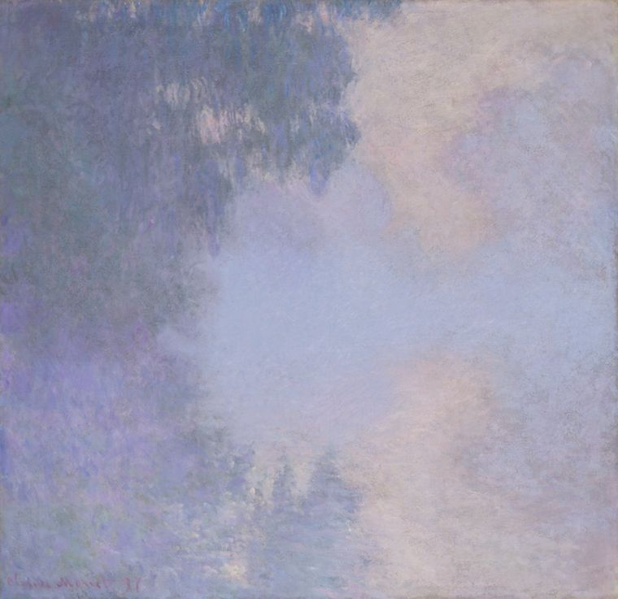</a>
  <figcaption>
    <p class="lbl"><span class="t">Branch of the Seine near Giverny (Mist)</span><span class="a">Claude Monet, 1897</span><span class="m">Oil on canvas</span></p>
    <p class="why"><b>Why</b> Almost no edges at all: lilac and blue dissolve into each other. The calmest image in the set.</p>
    <p class="use"><b>Use</b> The default lesson background. Cards float on it; two copies of it, blurred differently, drift slowly past each other.</p>
  </figcaption>
</figure><figure class="card">
  <a href="https://www.artic.edu/artworks/110561" target="_blank" rel="noopener">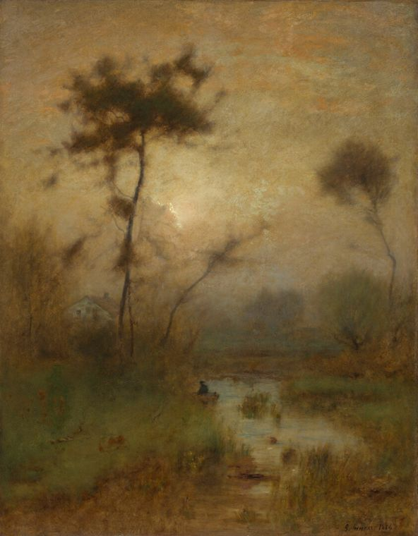</a>
  <figcaption>
    <p class="lbl"><span class="t">A Silver Morning</span><span class="a">George Inness, 1886</span><span class="m">Oil on canvas</span></p>
    <p class="why"><b>Why</b> Tonalism: one soft source of light, everything else held back in brown-green.</p>
    <p class="use"><b>Use</b> Morning review. Where the light sits in the frame can quietly mark the time of day.</p>
  </figcaption>
</figure><figure class="card">
  <a href="https://www.artic.edu/artworks/64729" target="_blank" rel="noopener">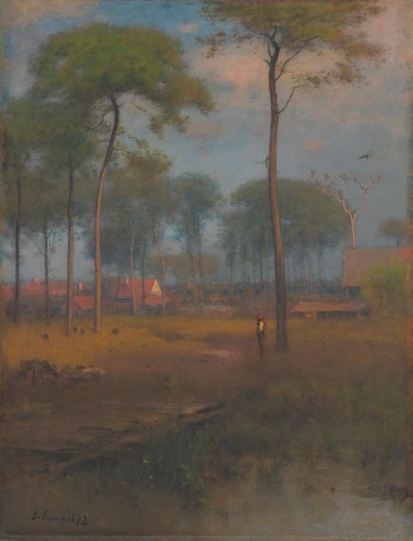</a>
  <figcaption>
    <p class="lbl"><span class="t">Early Morning, Tarpon Springs</span><span class="a">George Inness, 1892</span><span class="m">Oil on canvas</span></p>
    <p class="why"><b>Why</b> Tall, thin trees give a vertical rhythm that suits a phone held upright.</p>
    <p class="use"><b>Use</b> A portrait crop for the family home, behind the profile cards.</p>
  </figcaption>
</figure><figure class="card">
  <a href="https://www.artic.edu/artworks/71971" target="_blank" rel="noopener">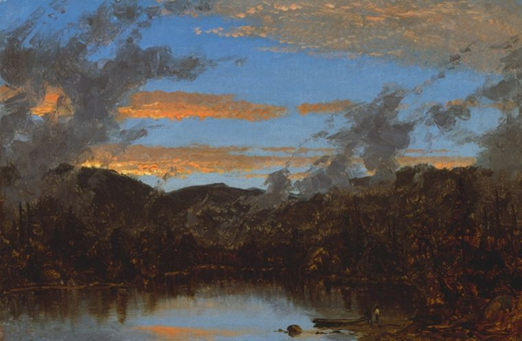</a>
  <figcaption>
    <p class="lbl"><span class="t">Mist Rising at Sunset in the Catskills</span><span class="a">Sanford Robinson Gifford, c. 1861</span><span class="m">Oil on canvas</span></p>
    <p class="why"><b>Why</b> A band of gold sky over dark land and darker water: the end of the day, unmistakably.</p>
    <p class="use"><b>Use</b> The evening state. The “Bedtime review” banner sits in that gold band.</p>
  </figcaption>
</figure><figure class="card">
  <a href="https://www.artic.edu/artworks/10926" target="_blank" rel="noopener">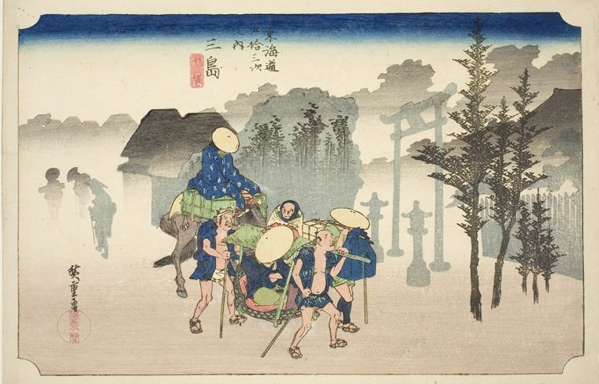</a>
  <figcaption>
    <p class="lbl"><span class="t">Mishima: Morning Mist (Mishima, asagiri), from the series &quot;Fifty-three Stations of the Tokaido Road (Tokaido gojusan tsugi no uchi),&quot; also known as the Hoeido Tokaido</span><span class="a">Utagawa Hiroshige, c. 1833/34</span><span class="m">Color woodblock print; oban</span></p>
    <p class="why"><b>Why</b> Mist built from flat grey layers of silhouette. Easy to separate and move.</p>
    <p class="use"><b>Use</b> Kids’ backgrounds made of 3–4 flat layers that move at different speeds as a lesson progresses.</p>
  </figcaption>
</figure><figure class="card">
  <a href="https://www.artic.edu/artworks/59002" target="_blank" rel="noopener">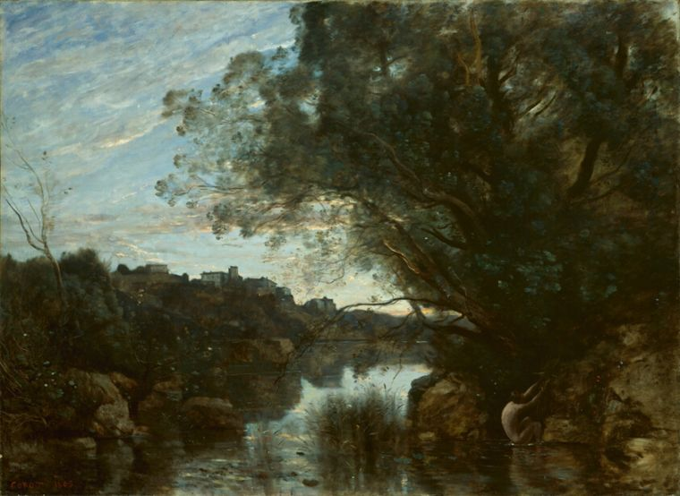</a>
  <figcaption>
    <p class="lbl"><span class="t">Souvenir of the Environs of Lake Nemi</span><span class="a">Jean Baptiste Camille Corot, 1865</span><span class="m">Oil on canvas</span></p>
    <p class="why"><b>Why</b> Dark trees frame one bright opening, a vignette that nature made.</p>
    <p class="use"><b>Use</b> The lesson-complete screen: the verse sits in the opening of light.</p>
  </figcaption>
</figure><figure class="card">
  <a href="https://www.artic.edu/artworks/56905" target="_blank" rel="noopener">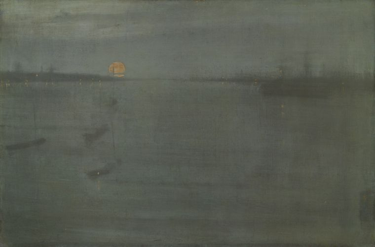</a>
  <figcaption>
    <p class="lbl"><span class="t">Nocturne: Blue and Gold—Southampton Water</span><span class="a">James McNeill Whistler, 1872</span><span class="m">Oil on canvas</span></p>
    <p class="why"><b>Why</b> Nearly one color, and a single small moon.</p>
    <p class="use"><b>Use</b> Bedtime review and dark mode. The moon is the only accent: gold, used once.</p>
  </figcaption>
</figure><figure class="card">
  <a href="https://www.artic.edu/artworks/139288" target="_blank" rel="noopener">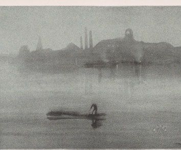</a>
  <figcaption>
    <p class="lbl"><span class="t">Nocturne</span><span class="a">James McNeill Whistler, 1878, published 1887</span><span class="m">Lithotint, on a prepared half-tint ground, in blac</span></p>
    <p class="why"><b>Why</b> Monochrome grain, like breath on a window.</p>
    <p class="use"><b>Use</b> A texture laid over flat dark surfaces at 4–6% so they never feel digital.</p>
  </figcaption>
</figure><figure class="card">
  <a href="https://www.artic.edu/artworks/16568" target="_blank" rel="noopener">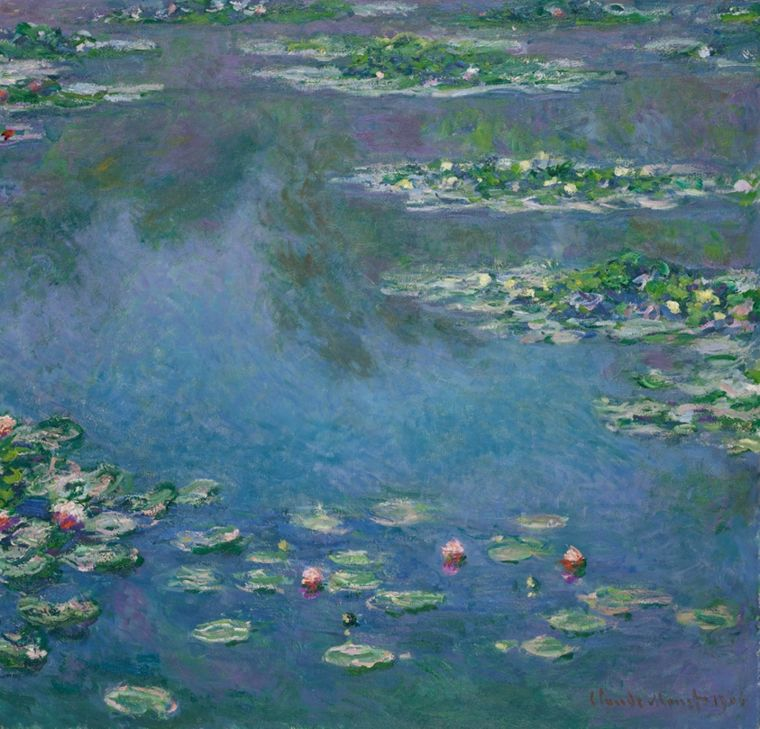</a>
  <figcaption>
    <p class="lbl"><span class="t">Water Lilies</span><span class="a">Claude Monet, 1906</span><span class="m">Oil on canvas</span></p>
    <p class="why"><b>Why</b> Separate pads floating on one surface: many things held by the same water.</p>
    <p class="use"><b>Use</b> A library or progress map where each verse is a pad that opens into a flower as it is secured.</p>
  </figcaption>
</figure><figure class="card">
  <a href="https://www.artic.edu/artworks/81535" target="_blank" rel="noopener">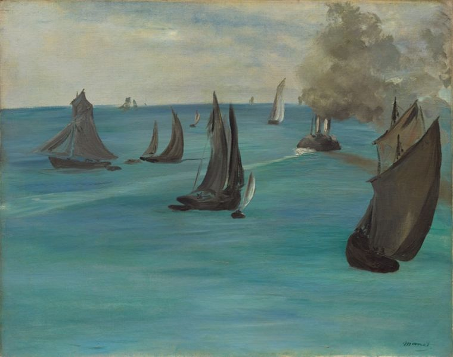</a>
  <figcaption>
    <p class="lbl"><span class="t">Sea View, Calm Weather (Vue de mer, temps calme)</span><span class="a">Édouard Manet, 1864</span><span class="m">Oil on canvas</span></p>
    <p class="why"><b>Why</b> Flat teal sea, a high horizon, boats as small marks.</p>
    <p class="use"><b>Use</b> Palette source for a cool daytime theme. The horizon doubles as a progress line.</p>
  </figcaption>
</figure><figure class="card">
  <a href="https://www.artic.edu/artworks/16343" target="_blank" rel="noopener">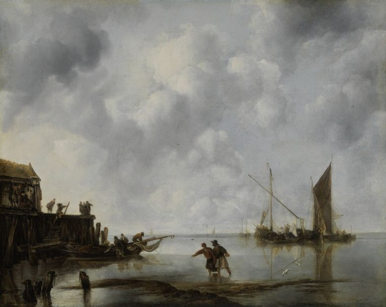</a>
  <figcaption>
    <p class="lbl"><span class="t">Fishing Boats in a Calm</span><span class="a">Jan van de Cappelle, 1651</span><span class="m">Oil on canvas</span></p>
    <p class="why"><b>Why</b> A Dutch “calm”: mirror-still water under a huge sky. It reads like Galilee.</p>
    <p class="use"><b>Use</b> Header art for the Gospels category. The sky holds a large serif reference.</p>
  </figcaption>
</figure><figure class="card">
  <a href="https://www.artic.edu/artworks/48805" target="_blank" rel="noopener">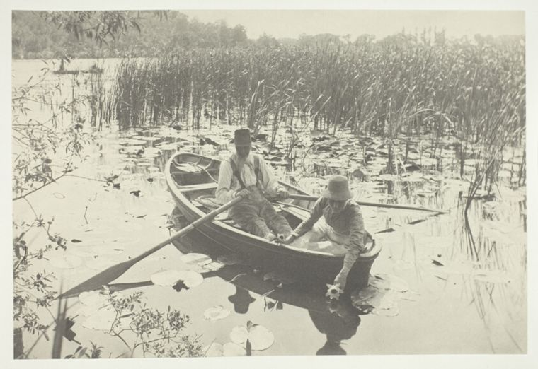</a>
  <figcaption>
    <p class="lbl"><span class="t">Gathering Water-Lilies</span><span class="a">Peter Henry Emerson, 1886, printed 1886</span><span class="m">Platinum print, pl. IX from the album &quot;Life and La</span></p>
    <p class="why"><b>Why</b> A platinum print: soft greys, and reeds as fine line texture.</p>
    <p class="use"><b>Use</b> Monochrome treatment for onboarding and empty states, before color is earned.</p>
  </figcaption>
</figure><figure class="card">
  <a href="https://www.artic.edu/artworks/38666" target="_blank" rel="noopener">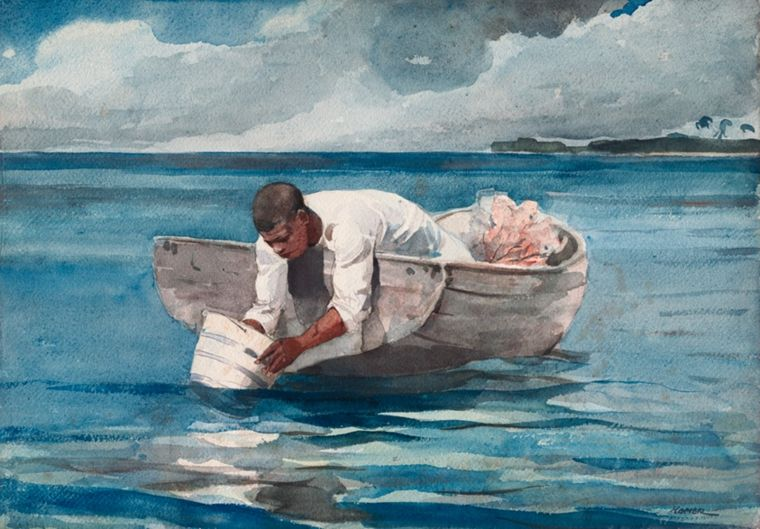</a>
  <figcaption>
    <p class="lbl"><span class="t">The Water Fan</span><span class="a">Winslow Homer, 1898/99</span><span class="m">Watercolor, with blotting and touches of scraping,</span></p>
    <p class="why"><b>Why</b> Watercolor: transparent washes with white paper showing through.</p>
    <p class="use"><b>Use</b> How feedback should arrive: a soft bloom of color behind the words, never a hard flash.</p>
  </figcaption>
</figure></div>
</section><section class="board" id="potters-clay">
  <header class="bhead">
    <p class="eyebrow">Board II · Family, children and the plan · 12 images</p>
    <h2>Potter’s Clay</h2>
    <blockquote>“We are the clay, and you are our potter; we are all the work of your hand.” <cite>Isaiah 64:8</cite></blockquote>
  </header>
  <div class="bintro">
    <div><h3>The idea</h3><p>Memorizing as a family is handmade work: patient, a little imperfect, done together over months. This board is earth, ridges and glaze. It is the warm register of the app, for the family home, the children’s track and the planner, where the image of a long road into the mountains carries a long goal.</p><h3>How the images were chosen</h3><p>I looked for surfaces you want to touch (glaze, palette knife, ribbed clay), for mountains stacked in layers that suggest distance and a journey, and for objects that show the hand that made them. Nothing glossy or perfect.</p></div>
    <div><h3>Where it shows up in the app</h3><ul class="uses"><li>Family home and the planner: layered ridges as the path toward a goal, one ridge per section.</li><li>The children’s track: flat shapes and few colors, in the manner of the woodblock prints.</li><li>Card and tile surfaces borrowed from glazes, with celadon as the main action color.</li></ul><h3>Palette, taken from the works</h3><ul class="swatches"><li><span class="chip" style="background:#B0643B"></span><span>Terracotta</span><code>#B0643B</code></li><li><span class="chip" style="background:#6B3F22"></span><span>Hare’s fur</span><code>#6B3F22</code></li><li><span class="chip" style="background:#A9C2B0"></span><span>Celadon</span><code>#A9C2B0</code></li><li><span class="chip" style="background:#23201D"></span><span>Raku black</span><code>#23201D</code></li><li><span class="chip" style="background:#D8B98A"></span><span>Wheat</span><code>#D8B98A</code></li><li><span class="chip" style="background:#2E4A7A"></span><span>Indigo</span><code>#2E4A7A</code></li></ul></div>
  </div>
  <div class="grid"><figure class="card">
  <a href="https://www.artic.edu/artworks/76571" target="_blank" rel="noopener">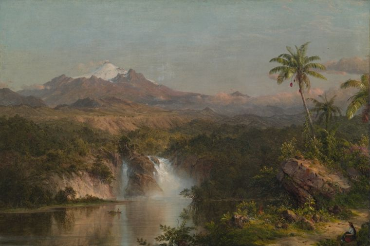</a>
  <figcaption>
    <p class="lbl"><span class="t">View of Cotopaxi</span><span class="a">Frederic Edwin Church, 1857</span><span class="m">Oil on canvas</span></p>
    <p class="why"><b>Why</b> Ridges stacked far into the distance, with water running through.</p>
    <p class="use"><b>Use</b> The path for a long goal like a catechism: each ridge a section, the peak the last question.</p>
  </figcaption>
</figure><figure class="card">
  <a href="https://www.artic.edu/artworks/11050" target="_blank" rel="noopener">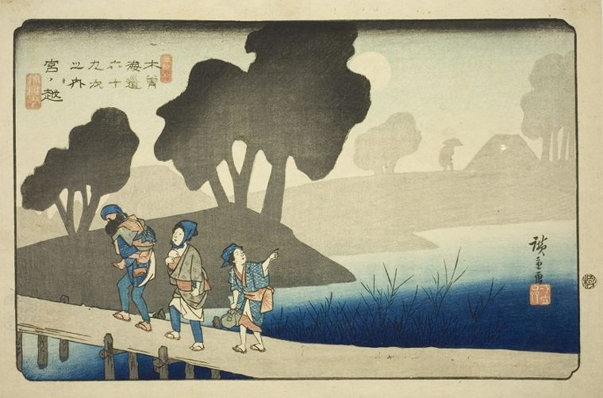</a>
  <figcaption>
    <p class="lbl"><span class="t">No. 37: Miyanokoshi, from the series &quot;Sixty-nine Stations of the Kisokaido (Kisokaido rokujukyu tsugi no uchi)&quot;</span><span class="a">Utagawa Hiroshige, c. 1835/38</span><span class="m">Color woodblock print; oban</span></p>
    <p class="why"><b>Why</b> Grey silhouettes, and people crossing a bridge together in the mist.</p>
    <p class="use"><b>Use</b> The family goal screen. Also the children’s illustration language: flat shapes, few colors.</p>
  </figcaption>
</figure><figure class="card">
  <a href="https://www.artic.edu/artworks/11054" target="_blank" rel="noopener">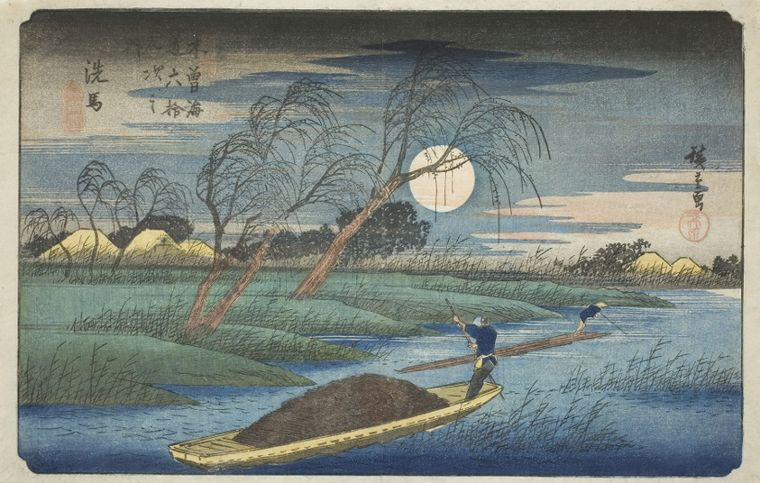</a>
  <figcaption>
    <p class="lbl"><span class="t">No. 32: Seba, from the series &quot;Sixty-nine Stations of the Kisokaido (Kisokaido rokujukyu tsugi no uchi)&quot;</span><span class="a">Utagawa Hiroshige, c. 1835/38</span><span class="m">Color woodblock print; oban</span></p>
    <p class="why"><b>Why</b> A night river, a full moon and willows, in indigo and pale green. It feels like a storybook.</p>
    <p class="use"><b>Use</b> The children’s bedtime review.</p>
  </figcaption>
</figure><figure class="card">
  <a href="https://www.artic.edu/artworks/39554" target="_blank" rel="noopener">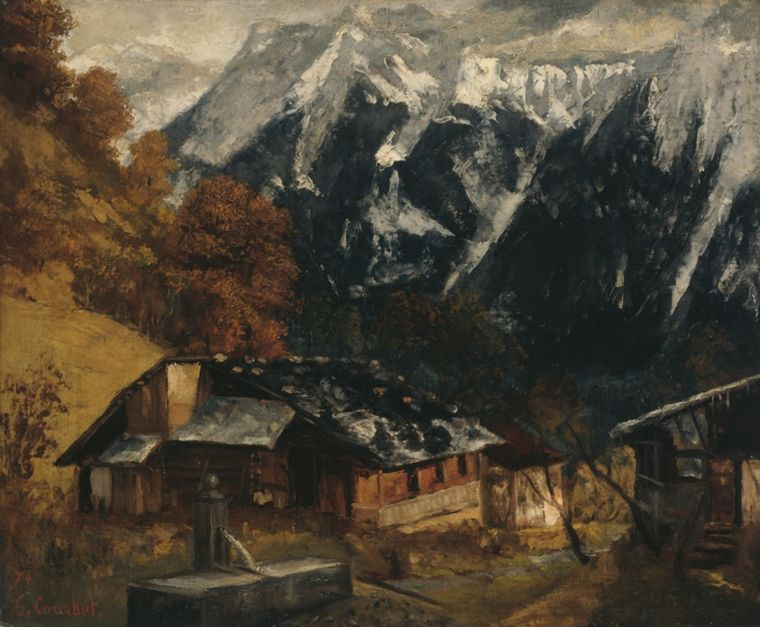</a>
  <figcaption>
    <p class="lbl"><span class="t">An Alpine Scene</span><span class="a">Gustave Courbet, 1874</span><span class="m">Oil on canvas</span></p>
    <p class="why"><b>Why</b> Heavy palette-knife paint, snow mountains and a sheltered hut.</p>
    <p class="use"><b>Use</b> Texture study for Amethyst, the level about keeping something over months.</p>
  </figcaption>
</figure><figure class="card">
  <a href="https://www.artic.edu/artworks/27027" target="_blank" rel="noopener">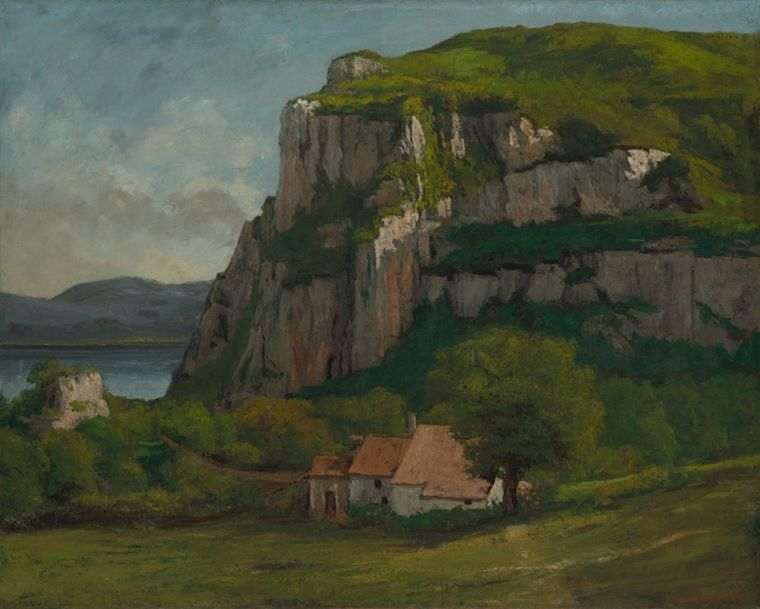</a>
  <figcaption>
    <p class="lbl"><span class="t">The Rock of Hautepierre</span><span class="a">Gustave Courbet, c. 1869</span><span class="m">Oil on canvas</span></p>
    <p class="why"><b>Why</b> A solid rock face: the house built on the rock (Matthew 7:24).</p>
    <p class="use"><b>Use</b> Art for the Emerald and Amethyst levels, where memory holds.</p>
  </figcaption>
</figure><figure class="card">
  <a href="https://www.artic.edu/artworks/145392" target="_blank" rel="noopener">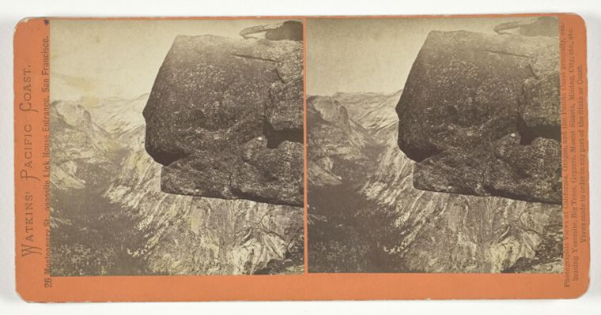</a>
  <figcaption>
    <p class="lbl"><span class="t">Yenaya Canyon from Glacier Point, Yosemite, from the series &quot;Watkins&#x27; Pacific Coast&quot;</span><span class="a">Carleton Watkins, 1861/76</span><span class="m">Albumen print, stereo</span></p>
    <p class="why"><b>Why</b> A stereograph: two nearly identical images on an orange card. Repetition is the whole point of the medium.</p>
    <p class="use"><b>Use</b> The “both ways” exercise (reference to verse, verse to reference) shown as a matching pair of cards.</p>
  </figcaption>
</figure><figure class="card">
  <a href="https://www.artic.edu/artworks/47908" target="_blank" rel="noopener">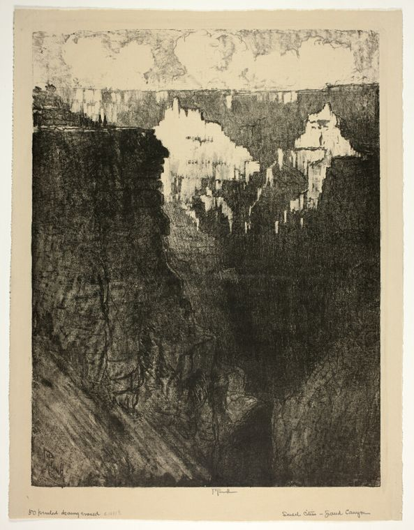</a>
  <figcaption>
    <p class="lbl"><span class="t">Sunset Cities, in the Grand Canyon</span><span class="a">Joseph Pennell, 1912</span><span class="m">Lithograph on buff laid paper</span></p>
    <p class="why"><b>Why</b> A lithograph of deep, dark strata with light only at the top.</p>
    <p class="use"><b>Use</b> Texture for Jasper-level screens that go deep: meanings and connected verses.</p>
  </figcaption>
</figure><figure class="card">
  <a href="https://www.artic.edu/artworks/158104" target="_blank" rel="noopener">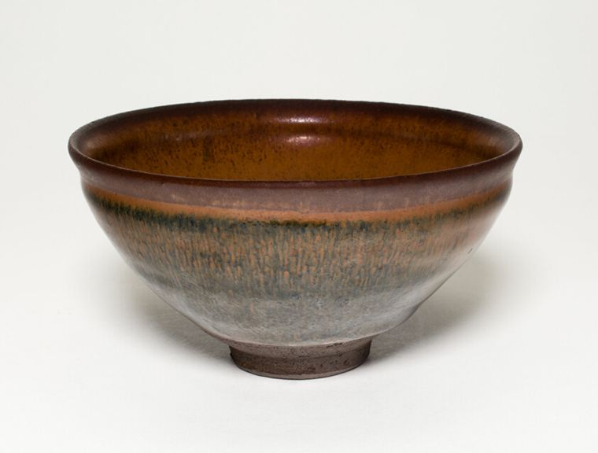</a>
  <figcaption>
    <p class="lbl"><span class="t">Tea Bowl with &quot;Hare&#x27;s fur&quot; Glaze</span><span class="a">Artist unknown, Song dynasty (960–1279)</span><span class="m">Stoneware with dark brown &quot;hare&#x27;s fur&quot; glaze and m</span></p>
    <p class="why"><b>Why</b> A glaze pulled into fine streaks by heat, in rich brown.</p>
    <p class="use"><b>Use</b> Surface for the children’s word-bank tiles. The streak becomes a progress stroke.</p>
  </figcaption>
</figure><figure class="card">
  <a href="https://www.artic.edu/artworks/8585" target="_blank" rel="noopener">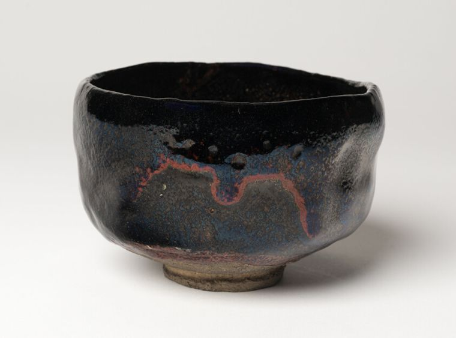</a>
  <figcaption>
    <p class="lbl"><span class="t">Raku Ware Tea Bowl</span><span class="a">Raku Ryōnyū, 18th century</span><span class="m">Glazed stoneware</span></p>
    <p class="why"><b>Why</b> Handmade and irregular, black glaze with one red line.</p>
    <p class="use"><b>Use</b> The “needs a refresh” state: imperfection shown with dignity, never error-red.</p>
  </figcaption>
</figure><figure class="card">
  <a href="https://www.artic.edu/artworks/22525" target="_blank" rel="noopener">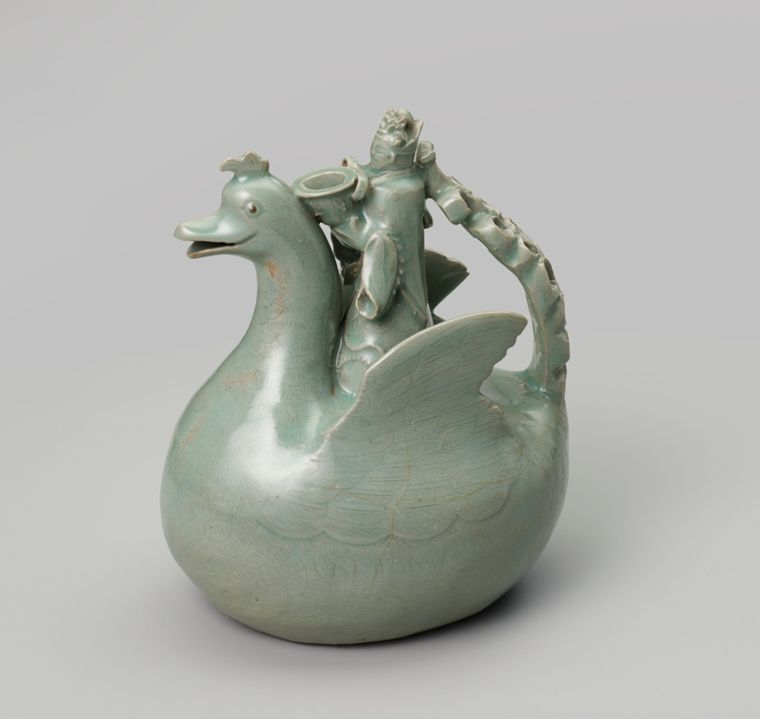</a>
  <figcaption>
    <p class="lbl"><span class="t">Duck-Shaped Ewer with Daoist Priest</span><span class="a">Artist unknown, Goryeo dynasty (918–1392), 12th century</span><span class="m">Stoneware with celadon glaze and underglaze incise</span></p>
    <p class="why"><b>Why</b> Celadon: a green-grey that is calm and warm at once.</p>
    <p class="use"><b>Use</b> The primary button and success color, instead of a generic app green.</p>
  </figcaption>
</figure><figure class="card">
  <a href="https://www.artic.edu/artworks/253" target="_blank" rel="noopener">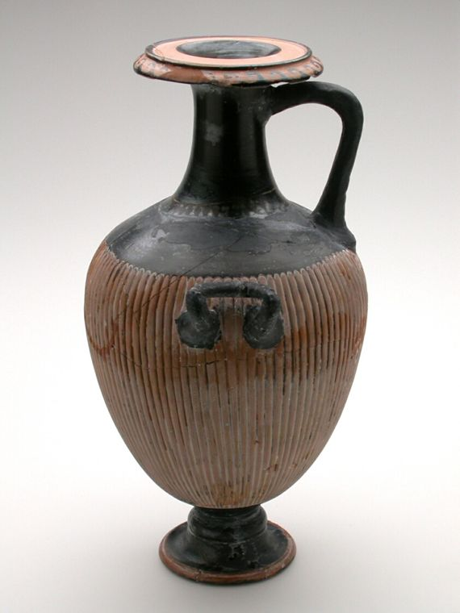</a>
  <figcaption>
    <p class="lbl"><span class="t">Hydria (Water Jar)</span><span class="a">Ancient Greek, about 300 BCE</span><span class="m">terracotta, black-glaze</span></p>
    <p class="why"><b>Why</b> A water jar, like the six at Cana, in terracotta and black gloss with a ribbed body.</p>
    <p class="use"><b>Use</b> Illustration language for new pieces being poured in. The ribs become segment marks on a progress bar.</p>
  </figcaption>
</figure><figure class="card">
  <a href="https://www.artic.edu/artworks/64818" target="_blank" rel="noopener">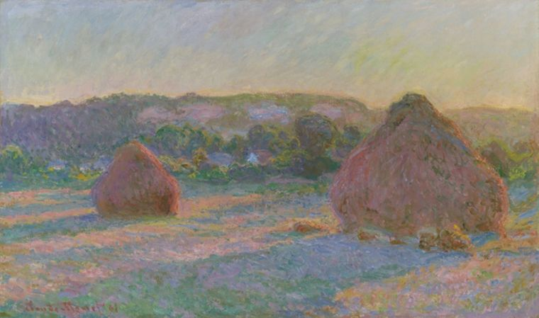</a>
  <figcaption>
    <p class="lbl"><span class="t">Stacks of Wheat (End of Summer)</span><span class="a">Claude Monet, 1890–91</span><span class="m">Oil on canvas</span></p>
    <p class="why"><b>Why</b> Harvest: lilac shadows on gold at the end of summer.</p>
    <p class="use"><b>Use</b> Lesson done and the planner’s forecast: what you sow comes back as harvest.</p>
  </figcaption>
</figure></div>
</section><section class="board" id="living-stones">
  <header class="bhead">
    <p class="eyebrow">Board III · Mastery, levels and reward · 13 images</p>
    <h2>Living Stones</h2>
    <blockquote>“You yourselves like living stones are being built up as a spiritual house.” <cite>1 Peter 2:5</cite></blockquote>
  </header>
  <div class="bintro">
    <div><h3>The idea</h3><p>Light through color, and stones made precious by being set. This is the register for mastery: the six levels named for the foundation stones of Revelation 21, the moment a level is reached, and the treasury of verses kept for good. Stained glass carries the idea well: many small pieces, each held by lead, becoming one picture when light comes through.</p><h3>How the images were chosen</h3><p>I chose objects that either carry light through them (glass, crystal) or are polished stone set in gold, and whose colors map honestly onto the six levels. The museum pieces give real carnelian, real green jasper and real amethyst to match against. Medieval and Tiffany glass are here for their lead lines, which make a natural grid for interface.</p></div>
    <div><h3>Where it shows up in the app</h3><ul class="uses"><li>The level badges: a round “roundel” per item, colored by its stone, set in a thin gold rim.</li><li>The level-up moment: glass lit slowly from behind, never confetti.</li><li>Progress as a strip of glass that fills pane by pane, and the family’s items gathered into one window.</li></ul><h3>Palette, taken from the works</h3><ul class="swatches"><li><span class="chip" style="background:#B9431F"></span><span>Carnelian</span><code>#B9431F</code></li><li><span class="chip" style="background:#D99A2B"></span><span>Topaz</span><code>#D99A2B</code></li><li><span class="chip" style="background:#2F5B9A"></span><span>Sapphire</span><code>#2F5B9A</code></li><li><span class="chip" style="background:#2E7D5B"></span><span>Emerald</span><code>#2E7D5B</code></li><li><span class="chip" style="background:#7E5BA0"></span><span>Amethyst</span><code>#7E5BA0</code></li><li><span class="chip" style="background:#4F6B4E"></span><span>Green jasper</span><code>#4F6B4E</code></li></ul></div>
  </div>
  <div class="grid"><figure class="card">
  <a href="https://www.artic.edu/artworks/192781" target="_blank" rel="noopener">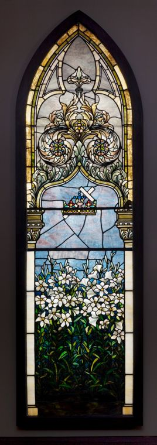</a>
  <figcaption>
    <p class="lbl"><span class="t">Lilies (Corey Memorial Window)</span><span class="a">Louis Comfort Tiffany, 1892–95</span><span class="m">Leaded Favrile glass</span></p>
    <p class="why"><b>Why</b> Opalescent glass: the color lives inside the glass, and the light comes from behind.</p>
    <p class="use"><b>Use</b> The level-up background, brightening slowly as if the sun came out behind it.</p>
  </figcaption>
</figure><figure class="card">
  <a href="https://www.artic.edu/artworks/64938" target="_blank" rel="noopener">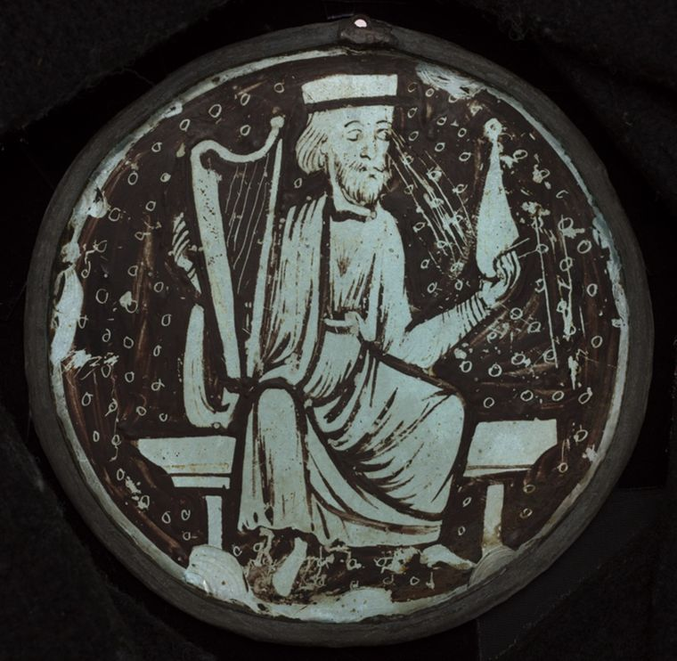</a>
  <figcaption>
    <p class="lbl"><span class="t">Roundel with Elder of the Apocalypse</span><span class="a">Artist unknown, 1250-75</span><span class="m">Glass, paint, silver stain, lead</span></p>
    <p class="why"><b>Why</b> A roundel of an elder from Revelation, the book the level names come from.</p>
    <p class="use"><b>Use</b> The round badge each memorized item wears.</p>
  </figcaption>
</figure><figure class="card">
  <a href="https://www.artic.edu/artworks/6607" target="_blank" rel="noopener">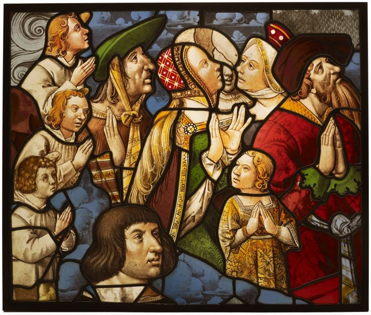</a>
  <figcaption>
    <p class="lbl"><span class="t">Saints and Worshippers in Adoration</span><span class="a">Artist unknown, 1510-15</span><span class="m">Glass, vitreous paint, silver stain, and lead</span></p>
    <p class="why"><b>Why</b> Many faces turned the same way: a gathered church, or a family.</p>
    <p class="use"><b>Use</b> The family progress screen: everyone’s roundels set into one window.</p>
  </figcaption>
</figure><figure class="card">
  <a href="https://www.artic.edu/artworks/44911" target="_blank" rel="noopener">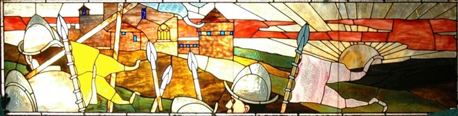</a>
  <figcaption>
    <p class="lbl"><span class="t">Window</span><span class="a">Harvey Ellis, c. 1900</span><span class="m">Multilayered leaded glass and steel</span></p>
    <p class="why"><b>Why</b> A long horizontal band of colored glass and lead.</p>
    <p class="use"><b>Use</b> The lesson progress bar as a strip of glass that fills pane by pane.</p>
  </figcaption>
</figure><figure class="card">
  <a href="https://www.artic.edu/artworks/185905" target="_blank" rel="noopener">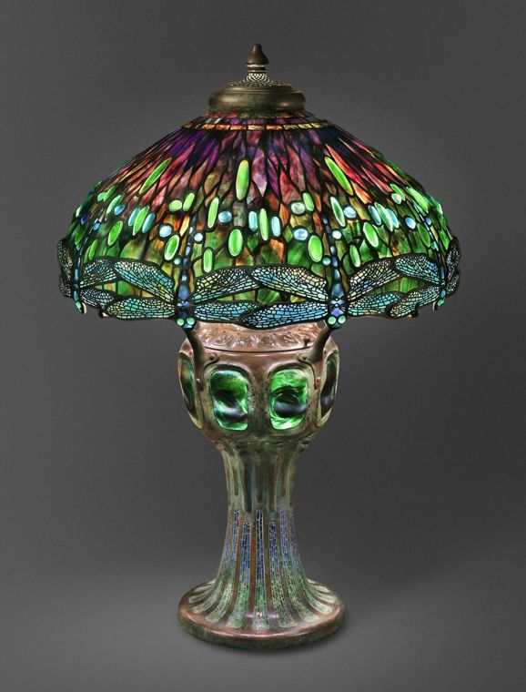</a>
  <figcaption>
    <p class="lbl"><span class="t">Lamp with Hanging Head Dragonfly Shade and Mosaic and Turtleback Base</span><span class="a">Clara Driscoll, By 1906</span><span class="m">Favrile glass and bronze</span></p>
    <p class="why"><b>Why</b> Glass jewels set in a ring around a lamp, glowing together.</p>
    <p class="use"><b>Use</b> The ring of six levels around an item’s badge.</p>
  </figcaption>
</figure><figure class="card">
  <a href="https://www.artic.edu/artworks/9" target="_blank" rel="noopener">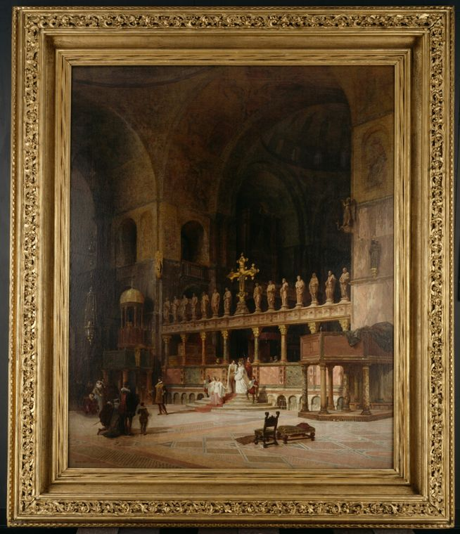</a>
  <figcaption>
    <p class="lbl"><span class="t">Interior of St. Mark&#x27;s, Venice</span><span class="a">David Dalhoff Neal, 1869</span><span class="m">Oil on canvas</span></p>
    <p class="why"><b>Why</b> Gold mosaic in near-darkness, with pools of light.</p>
    <p class="use"><b>Use</b> The Jasper theme: a deep, warm dark with gold.</p>
  </figcaption>
</figure><figure class="card">
  <a href="https://www.artic.edu/artworks/13205" target="_blank" rel="noopener">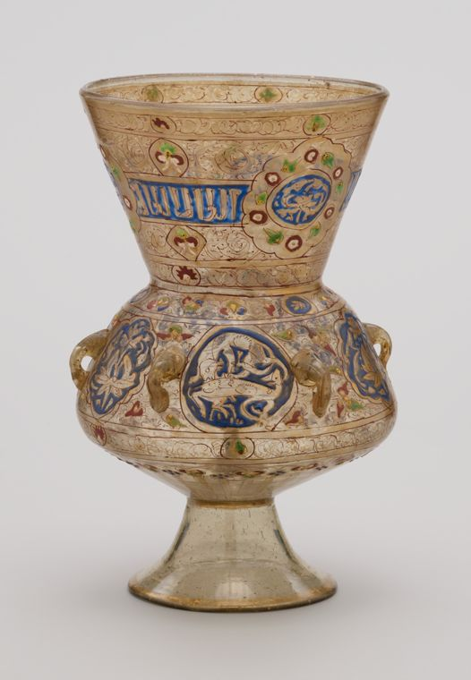</a>
  <figcaption>
    <p class="lbl"><span class="t">Lamp</span><span class="a">Islamic, Mamluk dynasty (1250-1517), 14th century</span><span class="m">Blown glass with polychrome enamels and gilding</span></p>
    <p class="why"><b>Why</b> Glass made to carry a flame, with points of enamel color.</p>
    <p class="use"><b>Use</b> The bedtime review icon. The enamel dots become point markers.</p>
  </figcaption>
</figure><figure class="card">
  <a href="https://www.artic.edu/artworks/109604" target="_blank" rel="noopener">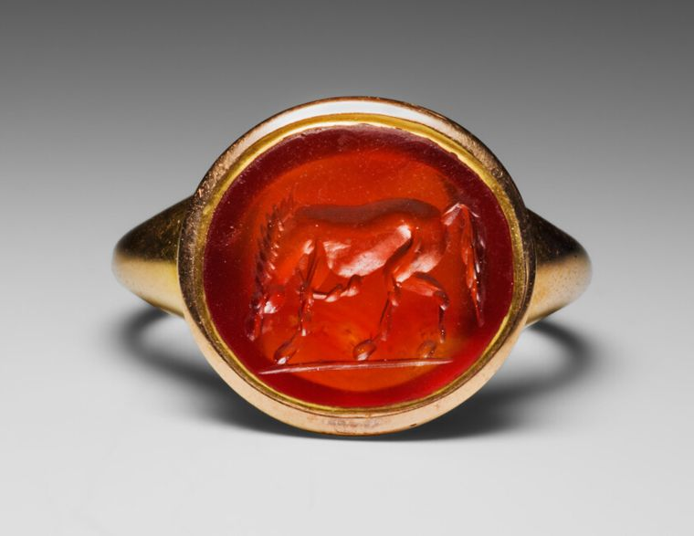</a>
  <figcaption>
    <p class="lbl"><span class="t">Intaglio Depicting a Horse</span><span class="a">Ancient Roman, Intaglio: 1st century
Setting: date unknown (modern)</span><span class="m">Intaglio: sardonyx
Setting: gold</span></p>
    <p class="why"><b>Why</b> A carved red stone, close in color to carnelian, the first level.</p>
    <p class="use"><b>Use</b> The Carnelian badge: translucent orange-red with relief carving.</p>
  </figcaption>
</figure><figure class="card">
  <a href="https://www.artic.edu/artworks/119332" target="_blank" rel="noopener">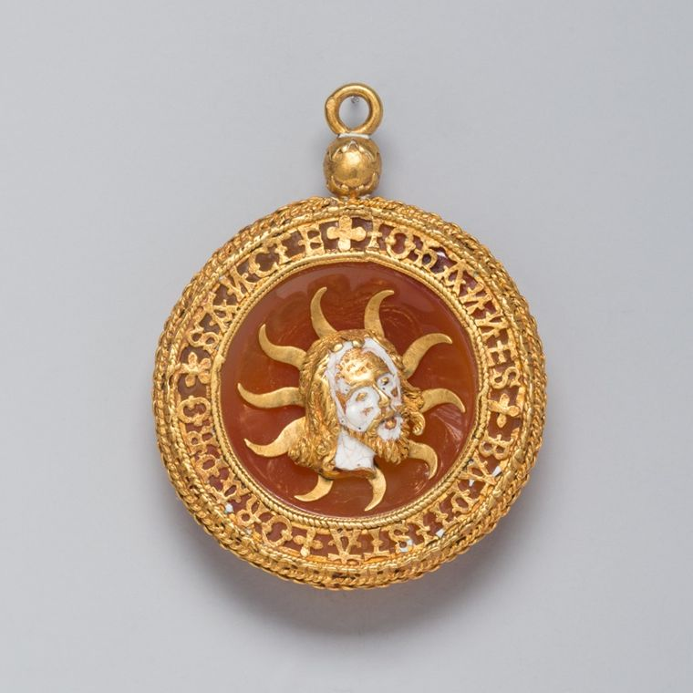</a>
  <figcaption>
    <p class="lbl"><span class="t">Hat Badge with the Head of Saint John the Baptist Adapted as a Pendant</span><span class="a">Artist unknown, c. 1500</span><span class="m">Gold, carnelian, and enamel</span></p>
    <p class="why"><b>Why</b> A carnelian disc with gold rays around a carved head: a stone turned into an honor you wear.</p>
    <p class="use"><b>Use</b> The composition for a level-up medal: stone at the center, gold rays around it.</p>
  </figcaption>
</figure><figure class="card">
  <a href="https://www.artic.edu/artworks/594" target="_blank" rel="noopener">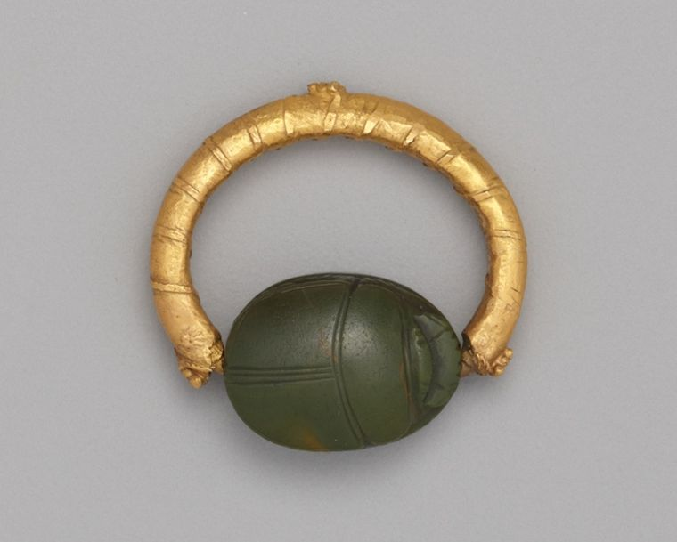</a>
  <figcaption>
    <p class="lbl"><span class="t">Ring with a Scarab Bezel</span><span class="a">Ancient Egyptian, Second Intermediate Period, Dynasty 15 (about 1650–1550 BCE)</span><span class="m">Gold and green jasper</span></p>
    <p class="why"><b>Why</b> Real green jasper, polished and set in gold.</p>
    <p class="use"><b>Use</b> An honest color reference for Jasper, the top level.</p>
  </figcaption>
</figure><figure class="card">
  <a href="https://www.artic.edu/artworks/2286" target="_blank" rel="noopener">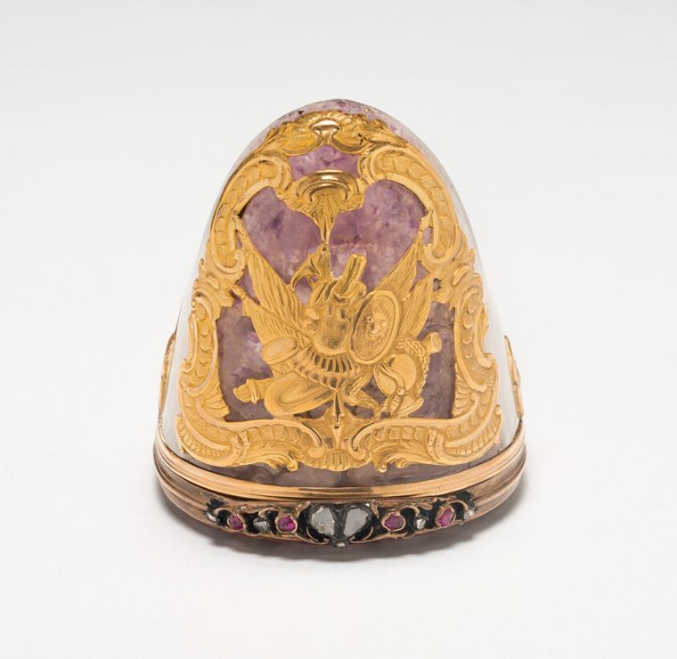</a>
  <figcaption>
    <p class="lbl"><span class="t">Snuff Box</span><span class="a">Artist unknown, 19th century</span><span class="m">Amethyst, gold, rubies, and diamonds</span></p>
    <p class="why"><b>Why</b> Amethyst seen through gold filigree.</p>
    <p class="use"><b>Use</b> The Amethyst level: stone under a gold lattice, a treasure kept over months.</p>
  </figcaption>
</figure><figure class="card">
  <a href="https://www.artic.edu/artworks/119971" target="_blank" rel="noopener">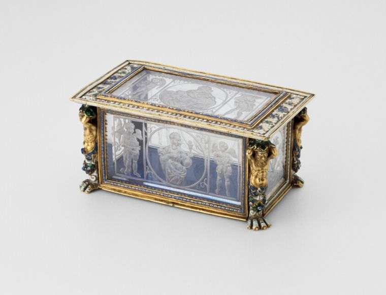</a>
  <figcaption>
    <p class="lbl"><span class="t">Casket with the Three Theological Virtues</span><span class="a">Artist unknown, c. 1525-c. 1550</span><span class="m">Gold, enamel, rock crystal, and lapis lazuli</span></p>
    <p class="why"><b>Why</b> Rock crystal panels in gold showing faith, hope and love (1 Corinthians 13:13).</p>
    <p class="use"><b>Use</b> The treasury where Jasper-level verses are kept, as if behind clear crystal.</p>
  </figcaption>
</figure><figure class="card">
  <a href="https://www.artic.edu/artworks/157021" target="_blank" rel="noopener">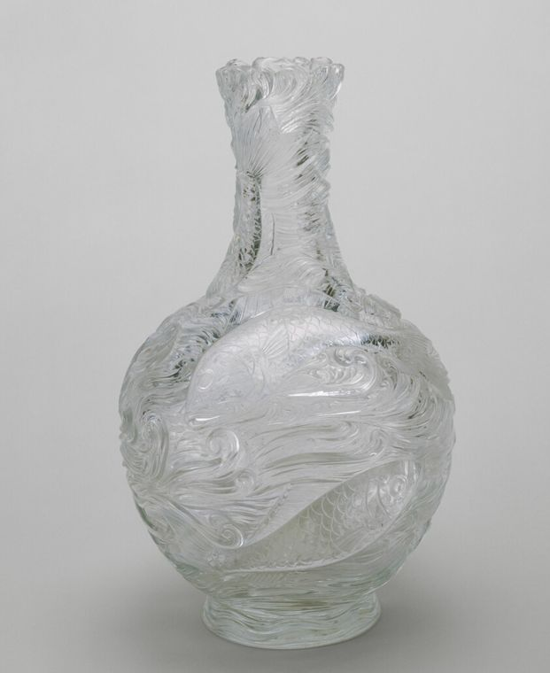</a>
  <figcaption>
    <p class="lbl"><span class="t">&quot;Rock Crystal&quot; Vase</span><span class="a">Thomas Webb &amp; Sons, 1889</span><span class="m">Glass</span></p>
    <p class="why"><b>Why</b> Carved clear glass: “clear as crystal” (Revelation 21:11).</p>
    <p class="use"><b>Use</b> Jasper’s finish: clarity and small refraction highlights on the gem.</p>
  </figcaption>
</figure></div>
</section>

  <section id="ux">
    <p class="eyebrow">Five products worth borrowing from</p>
    <h2>UX examples</h2>
    <div class="exgrid"><article class="ex"><p class="eyebrow">Living backgrounds</p><h3>Apple Weather</h3><p><b>What it does.</b> The backgrounds come in thousands of variations that follow the sun’s position, cloud and rain where you are, so the screen tells you something before you read a word.</p><p><b>What we take.</b> Let the background follow the time of day: morning mist for new pieces, gold at dusk, a nocturne for the bedtime review. The scene itself says what kind of session this is.</p><p class="src">Sources: <a href="https://9to5mac.com/2021/06/11/ios-15-weather-app-hands-on/" target="_blank" rel="noopener">9to5Mac</a> · <a href="https://www.macrumors.com/guide/ios-15-weather-app" target="_blank" rel="noopener">MacRumors</a></p></article><article class="ex"><p class="eyebrow">Calm generative motion</p><h3>Endel</h3><p><b>What it does.</b> Each soundscape has its own generative visual. The motion is gentle and slow, in a mostly monochrome interface.</p><p><b>What we take.</b> Motion as atmosphere, not decoration. When a verse is read aloud, the water behind it can move with the voice, very slightly.</p><p class="src">Sources: <a href="https://endel.io/" target="_blank" rel="noopener">Endel</a> · <a href="https://screensdesign.com/showcase/endel-focus-sleep-sounds" target="_blank" rel="noopener">Screensdesign</a></p></article><article class="ex"><p class="eyebrow">Calm without penalties</p><h3>Monument Valley</h3><p><b>What it does.</b> No timers, no enemies, no penalties for failure, in a restrained pastel world where nothing is there only to look pretty.</p><p><b>What we take.</b> No timers or lives in lessons. A wrong answer teaches instead of punishing. Every ornament has a job.</p><p class="src">Sources: <a href="https://www.wallpaper.com/tech/monument-valley-at-10-the-story-of-the-most-meticulous-puzzle-game-ever-created" target="_blank" rel="noopener">Wallpaper</a> · <a href="https://invisionapp.com/inside-design/secrets-behind-the-success-of-monument-valley" target="_blank" rel="noopener">InVision</a></p></article><article class="ex"><p class="eyebrow">Layered landscapes and light</p><h3>Alto’s Odyssey</h3><p><b>What it does.</b> A minimal art style made of layered landscapes, with dynamic lighting and weather that change the mood of each place.</p><p><b>What we take.</b> Build backgrounds from flat layers (the woodblock approach) so they can shift with depth and light. Cheap to render, rich to look at.</p><p class="src">Sources: <a href="https://altosodyssey.com/press" target="_blank" rel="noopener">Alto’s Odyssey press</a> · <a href="https://macstories.net/reviews/altos-odyssey-review-desert-tranquility/" target="_blank" rel="noopener">MacStories</a></p></article><article class="ex"><p class="eyebrow">The closest existing app</p><h3>Verses: Bible Memory</h3><p><b>What it does.</b> A progression of six memory games from first exposure to full recall, plus a “memory health” score that prompts a review when it drops.</p><p><b>What we take.</b> The baseline to beat. What we add: levels that require passes on different days, a planner, a family, and a look that feels made for Scripture.</p><p class="src">Sources: <a href="https://apps.apple.com/us/app/id939461663" target="_blank" rel="noopener">App Store</a> · <a href="https://learnofchrist.com/resources/memory-verses" target="_blank" rel="noopener">Learn of Christ review</a></p></article></div>
  </section>

  <section id="game">
    <p class="eyebrow">What levels, gems and points can look like</p>
    <h2>Levels and points</h2>
    <p>The aim is feedback that tells the truth about memory, not confetti. These three show the pieces: gems as objects you earn, medals with weight and a record behind them, and a history that grows.</p>
    <div class="exgrid"><article class="ex"><p class="eyebrow">Gems as earned objects</p><h3>Opal</h3><p><b>What it does.</b> Focus Gems are the heart of the app: rendered 3D gems unlocked at milestones, each with a name, and shareable. Opal says only about 2% of users reach the highest one.</p><p><b>What we take.</b> The closest model for the stone levels: a gem you can turn and look at, rarity told honestly. One user complained that equipping a gem changed nothing visible, so in our app an item’s level should show everywhere that item appears.</p><p class="src">Sources: <a href="https://www.opal.so/features" target="_blank" rel="noopener">Opal features</a> · <a href="https://opal.so/blog/the-milestone-reveal-moment" target="_blank" rel="noopener">Milestone reveal</a> · <a href="https://makeheadway.com/blog/opal-app-review/" target="_blank" rel="noopener">Review</a></p></article><article class="ex"><p class="eyebrow">Medals with weight</p><h3>Apple Fitness awards</h3><p><b>What it does.</b> Awards are medals with distinct shapes and materials, and you can open one full screen and rotate it.</p><p><b>What we take.</b> Each level gets its own cut and stone, not just a color. Tap a badge to turn it in the light and see the date and the three recalls that earned it.</p><p class="src">Sources: <a href="https://www.macrumors.com/2022/07/07/apple-fitness-gains-dedicated-awards-in-ios-16/" target="_blank" rel="noopener">MacRumors</a> · <a href="https://developer.apple.com/forums/thread/706570" target="_blank" rel="noopener">Apple developer forum</a></p></article><article class="ex"><p class="eyebrow">A visible history</p><h3>Forest</h3><p><b>What it does.</b> A tree grows while you focus, and each finished session joins a forest that is your record over time.</p><p><b>What we take.</b> Keep what was earned visible as a growing thing: a window that fills with roundels, a wall of living stones. But skip its punishment (a tree that dies when you leave): for children, loss should never be the motivator. Critics also note people game the streak, which is why our levels need passes on separate days.</p><p class="src">Sources: <a href="https://forestapp.cc/" target="_blank" rel="noopener">Forest</a> · <a href="https://goodux.appcues.com/blog/forests-gamified-focus" target="_blank" rel="noopener">Good UX</a></p></article></div>
  </section>

  <section id="questions">
    <p class="eyebrow">For the next round</p>
    <h2>Decisions for you</h2>
    <ol class="qs">
      <li>Lead with one board, or use all three as registers (practice, family, mastery) as proposed?</li>
      <li>Painting or photography behind the cards? This page argues for painting. Photography would feel more modern and less like a museum.</li>
      <li>How much motion: still images, slow drift, or backgrounds that follow the time of day?</li>
      <li>Does the app have a name yet? The direction could carry one (“Still Waters”, “Living Stones”).</li>
    </ol>
  </section>
</main>

<footer class="wrap">
  <p>All images: Art Institute of Chicago, public domain (CC0), via the museum’s open-access API. Tap any image to open its museum page. Notes on apps draw on the linked sources and describe them as of their publication.</p>
</footer>
